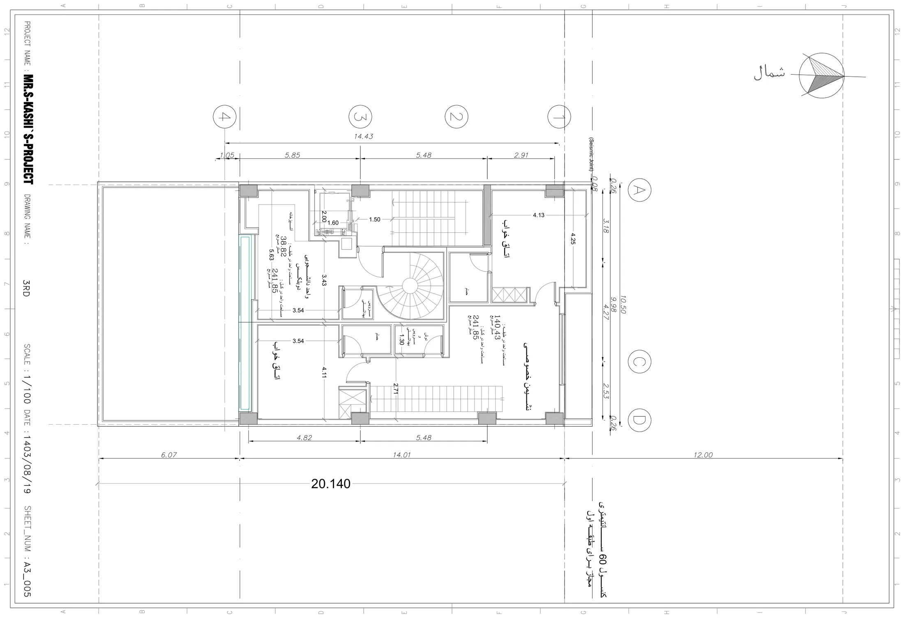

نقشه · طرح ۱۴۰۳
پلان طبقهٔ سوم
طبقهٔ سوم
{kind=link}

به چه نگاه کنیم
- «نشیمن خصوصی» بزرگ در گوشهٔ شمالشرقی: طبقهٔ پایین دوبلکس اصلی، «مساحت در طبقه: ۱۴۰٫۴۳» و «در کل: ۲۴۱٫۸۵ متر مربع».
- اتاق خواب ۴٫۲۵×۴٫۱۳ در شمالغربی و اتاق خواب ۴٫۱۱×۳٫۵۴ در جنوبشرقی، هر دو با حمام.
- «واحد دانشجویی دوبلکس» در گوشهٔ جنوبغربی با «آشپزخانه» ۵٫۶۳ و «مساحت در طبقه: ۳۸٫۸۲»؛ پلهٔ مارپیچ از پایین به اینجا میرسد.
- پلهٔ ۲٫۷۱ در ضلع شرقی: پلهٔ داخلی دوبلکس اصلی به طبقهٔ چهارم.
- «دوش و سرویس بهداشتی» ۱٫۳۰ و «سرویس بهداشتی» کنار پلهٔ مارپیچ.
- برچسب «مساحت واحد در کل: ۲۴۱٫۸۵» زیر واحد دانشجویی — همان عدد دوبلکس اصلی که اشتباهاً تکرار شده.
- خط آبی لبهٔ جنوبی جلوی واحد دانشجویی و اتاق خواب.
فضاها
دوبلکس اصلی: نشیمن خصوصی، دوبلکس اصلی: اتاق خواب (۲)، دوبلکس اصلی: حمام (۲)، دوبلکس اصلی: دوش و سرویس بهداشتی، واحد دانشجویی: نشیمن و آشپزخانه، واحد دانشجویی: سرویس بهداشتی، پلهٔ مارپیچ، پلهٔ داخلی دوبلکس اصلی، پلکان و آسانسور
یادداشت
طبقهٔ سوم دو نیمه دارد: طبقهٔ بالای واحد دانشجویی (۳۸٫۸۲ متر با آشپزخانه) و طبقهٔ پایین دوبلکس اصلی با دو خواب و نشیمن خصوصی. مجموع دو طبقهٔ واحد دانشجویی ۱۰۴٫۹۸ میشود، ولی برچسب «در کل» زیر آن ۲۴۱٫۸۵ نوشته شده که رقم دوبلکس اصلی است. حلنشده: مبلمان و آشپزخانهٔ دوبلکس اصلی نیست (به طبقهٔ چهارم موکول شده)؛ دو حمام برای یک طبقهٔ خواب که به نظرم زیاد بود. نسخهٔ جایگزینی (3RD-ALT) هم در بایگانی هست که اینجا نیامده. کادر عنوان: 3RD / ۱۴۰۳/۰۸/۱۹ / A3_005.